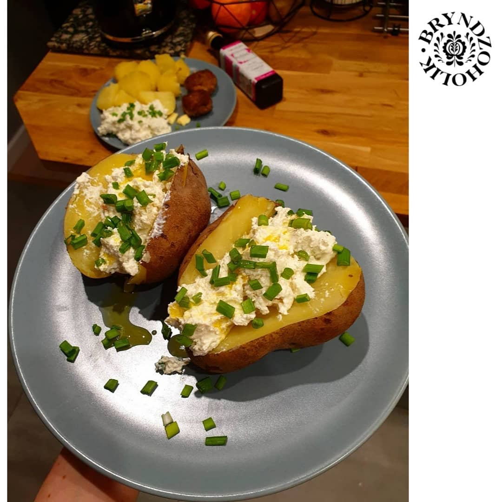

Varené zemiaky podľa @bryndzoholik — Normy Jedál
V jednoduchosti je krása!
V jednoduchosti je Bryndza ❤️
🇸🇰🐑🥔
Varený zemiak s bryndzou, maslom/olivovým olejom a pažítkou. Dobrú chuť bryndzoholici 🍴
#bryndza #bryndzoholik #bryndzove #zemiaky #zemiak #pazitka #pažitka #olivovyolej #maslo #slaninka #varenezemiaky #slovenskyblog #slovensko #slovenskonafotke #slovakia #food #foodporn #jedlo #recepty #toprecepty #bryndzajelenjedna #foodinspiration #zdravejedlo #uzasnejedlo #dnesobedvam #dnesjem #dnesvarim